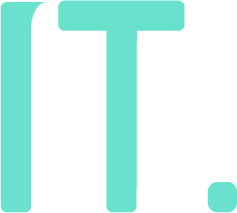
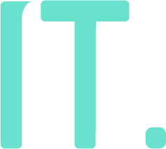
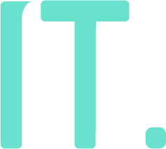
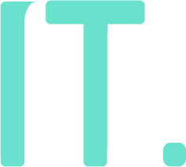

Onze stageplaats is gevestigd te Boutersem in het gemeentehuis. Onder toezicht van Dhr. Kris Wuyts gaan wij als bedrijf de gegeven opdrachten uitvoeren. Dhr. Kris Wuyts is de IT-verantwoordelijke in Boutersem.
Wij moeten voor onze stage 2 opdrachten uitvoeren, namelijk het visualiseren van gegevens op schermen van een sporthal in Sport’O’Droom en het automatiseren van het Automatisatie managementsoftware IT-infrastructuur. Deze opdrachten werden opgesteld door Dhr. Kris Wuyts.